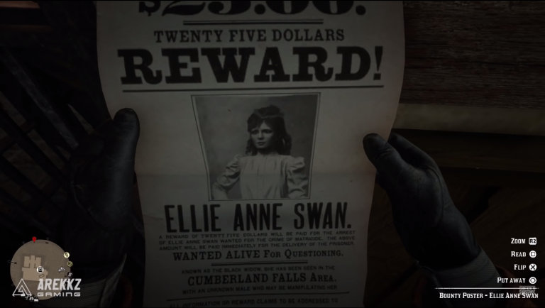

Red Dead Redemption 2 Guide
Best ways to make money in Red Dead Redemption 2
You can sell horses and coaches to make money, as well as selling high-quality items like pocket watches, Legendary animal pelts and selling any fish that you catch. As you complete missions and side quests you’ll be rewarded along the way and you’ll make a fair bit, so these tips are more about earning a little extra pocket money.
You’ll need to find the Trapper to sell your pelts and craft some funky gear.
You can also fence your looted items because crime does pay in Red Dead Redemption 2.
Whether it’s five finger fillet, dominoes or poker, you can play for high stakes in Red Dead Redemption 2’s minigames. You can practice in camp before taking on the big leagues.
If you find a snake bite or bear trap victim, it’s worth helping them to get a few unexpected rewards a couple of days later should you find the person. They’ll buy a sweet something for you, like a shiny new gun or a hat, and you can either keep this nice reward or sell it. You’ll often find strangers asking for a lift due to a lame horse, and they usually gift you a pocketwatch or earrings for your troubles.
Some people will also give you information if you help them, sometimes about trains or homesteads you can rob so there’s always that.

Fulfilling a Wanted Bounty contract is a reliable and semi-repeatable way of earning cash in Red Dead Redemption 2. You can find Wanted posters hanging in the sheriff’s office – just make sure there isn’t one for you!
Once you’ve picked up a Bounty, it will appear on your map and you can travel to the location to complete it. Sometimes you need to hunt people and bring them back alive, which means hogtying someone up and riding back to the sheriff’s office with them protesting on the back of your horse.
They usually pay around $25 which isn’t bad considering a lot of the menial tasks you can complete that don’t pay as well.
Gold bars were a lucrative source of income back in the old West, and there are quite a few to be found in Red Dead Redemption 2. You’ll usually find them at the end of a treasure map and a few other quest lines.
You can check out our guide on how to easily find three gold bars near the strange statues here, as well as our Poisonous Trail treasure map guide, Jack Hall Gang treasure map guide and Le Tresor Des Morts treasure map to find some more.
There also a glitch that can be exploited to get unlimited gold bars, so take a look before it gets patched out!
If you still don’t think you’ve made enough money after all that, then check out our guide on where to find and sell gold bars in Red Dead Redemption 2.
Each gold bar is worth $500 so there’s a lot of money to be made here which will help you upgrade your entire camp very quickly, as well as get some stylish new gear.
Credits go to: VG247.